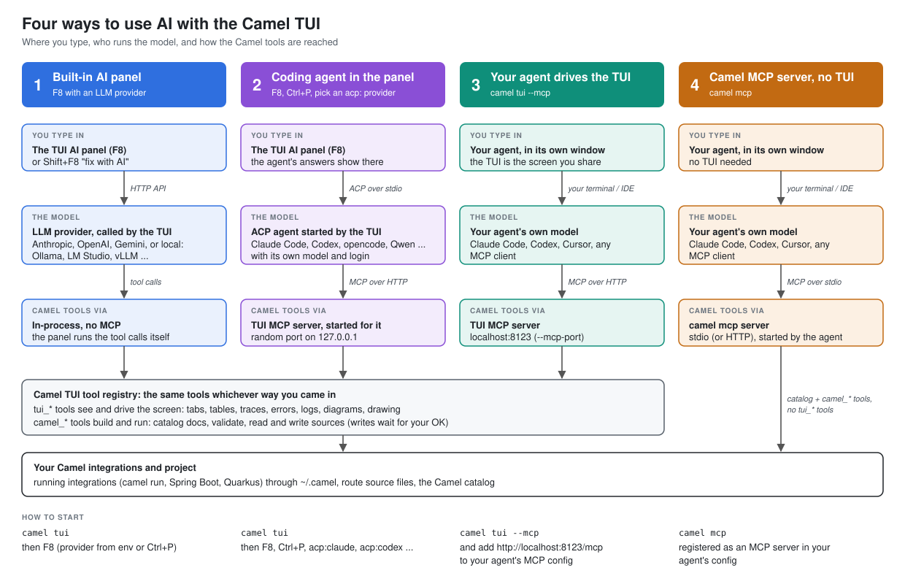
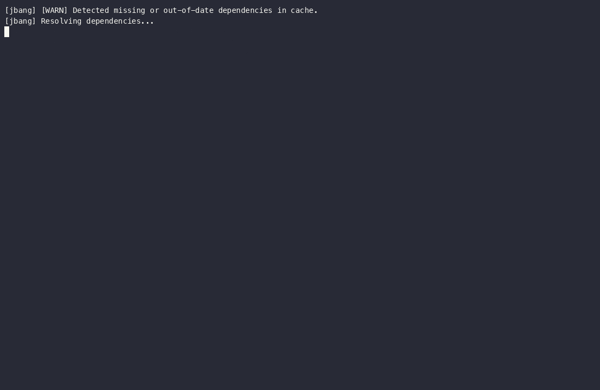

Camel TUI Ways to Use AI
There are several ways to bring AI into the Camel TUI, and they differ in three things: where you type, who runs the model, and how the model reaches Camel. This page puts them side by side so you can pick one; the pages linked from each section have the details.
See Camel TUI for getting started and the other pages.

At a glance
| You type in | The model | Camel tools via | Start with | |
|---|---|---|---|---|
1. Built-in AI panel | The AI panel (F8) in the TUI | An LLM provider the TUI calls: Anthropic, OpenAI, Gemini, or a local model through Ollama or an OpenAI-compatible server | The panel itself, in-process (no MCP) |
|
2. Coding agent in the panel | The AI panel (F8) in the TUI | An agent the TUI starts over ACP (Claude Code, Codex, opencode, Qwen, …), with its own model and login | The TUI’s MCP server, started for the agent on a random localhost port |
|
3. Your agent drives the TUI | Your agent, in its own terminal or IDE | Your agent’s own model | The TUI’s MCP server on |
|
4. Camel MCP server, no TUI | Your agent, in its own terminal or IDE | Your agent’s own model | The |
|
In the first three the model gets the same tools from the same place: the TUI’s tool registry. The tui_* tools see and drive the screen (tabs, tables, traces, errors, logs, diagrams, drawing on the screen), and the camel_* tools build and run integrations (catalog documentation, validation, reading and writing the route sources). The camel_* tools are the same ones the camel mcp server offers, so an agent gets the same Camel through either door; only the tui_* tools need the TUI.
1. The built-in AI panel
Press F8 and ask. The TUI is the agent: it sends your question to the model, runs the tools the model asks for itself, and shows the answer. No MCP server is involved, and nothing runs outside the TUI except the model.
The provider is detected from the environment (ANTHROPIC_API_KEY, OPENAI_API_KEY, GEMINI_API_KEY, a local Ollama, …) and Ctrl+P switches it. With a local model nothing leaves your machine, and the panel sends a smaller tool set to keep prompts short.
Pick this when you want answers inside the TUI with no other tool installed, or when you want to run a local model.
-
Camel TUI AI Panel — providers, slash commands, AI project overview, AI log
-
Camel TUI Local Models — Ollama, OpenAI-compatible servers, what a question costs
2. A coding agent in the panel (ACP)
The same panel can hand the conversation to a coding agent instead of a model. Press Ctrl+P in the panel and pick an acp: provider (acp:claude, acp:codex, acp:opencode, …). The TUI starts the agent as a subprocess and talks to it over the Agent Client Protocol (ACP). The agent brings its own model, login, settings and skills; the TUI shows its answers, tool calls and permission questions in the panel.
To reach Camel the agent needs the TUI’s tools, so the TUI starts its MCP server for it on a random port on 127.0.0.1 and hands the address to the agent. You do not need --mcp for this.
Pick this when you already use a coding agent and want it inside the TUI, with your subscription and its own tools (it can also edit files and run commands, each asked for in a popup).

3. Your agent drives the TUI (MCP)
Here you work in your agent (Claude Code in another terminal, an IDE assistant, any MCP client) and the TUI is the screen you both look at. Start the TUI with camel tui --mcp and point the agent at http://localhost:8123/mcp. The agent sees what you see and can act on it: switch tabs, select routes, send test messages, start and stop routes, draw on the screen to show you something, and edit the route sources.
Pick this when the agent is where you do your work and you want it to see and steer the running integrations.
One MCP server, two ways to start it
Ways 2 and 3 use the same MCP server inside the TUI, with the same tools. The difference is only who starts it and who connects:
| Way 2 (ACP) | Way 3 (--mcp) | |
|---|---|---|
Started | automatically, when an ACP agent needs it | by |
Port | random |
|
Connected by | the agent the TUI started | any MCP client you configure |
Either way the server listens on 127.0.0.1 only, has no authentication, and rejects requests from web pages. F2 → AI & MCP → MCP Info shows the port and the client, and MCP Log the calls it made.
4. The Camel MCP server, without the TUI
camel mcp is a separate MCP server that does not need the TUI at all. It gives an agent the Camel catalog (components, EIPs, data formats, Kamelets, examples), the shared camel_* authoring tools, and tools to inspect integrations started with camel run. It has no screen, so it has no tui_* tools.
Pick this when you do not use the TUI, or when the agent should know Camel while you work elsewhere. It can run next to the TUI; the agent then has both servers.
What is the same in every way inside the TUI
-
Changes to files wait for you. A file the model writes through
camel_write_fileis validated first, and then shows a confirm dialog with the diff (or, with/write live, is typed into the Source editor while you watch). This holds for the built-in panel, an ACP agent and an external MCP agent alike. -
You can see what happened. The AI log (F2 → AI & MCP → AI Log) records the questions, tool calls and answers of the panel; the MCP log records the calls agents made through the MCP server.
-
The same shortcuts open the panel. Shift+F8 in the Source editor, the Log tab and the Errors view writes the question for you ("fix with AI") and sends it to whichever provider or agent the panel uses.
/overview, which explains the project, needs a model (way 1); an agent explains it with thecamel_project_overviewandcamel_save_project_summarytools when you ask it to.
Not the TUI’s AI: LLM calls from your integration
An integration can call an LLM itself, for example with the openai or langchain4j components. That has nothing to do with the ways above, but the TUI shows it: with observability enabled on the integration, Ctrl+U in the AI panel lists those calls as integration next to the panel’s own (TUI ask).